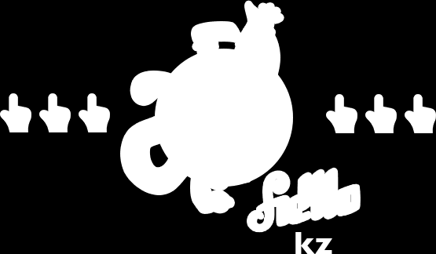

This is sample page of Alpha Spriter javascript plugin.
What we are doing here is making big picture with alpha size one fourth of usual png size.
Here are two sources: rgb saved as gif (10Kb) and alpha, saved as png8 (4 Kb):
, 
And here is what we got when we combine and splitting them via Alpha Spriter
(first is div with background-color property, second is img):
And this is png image we used before. Its size is 56 Kb:
Thank you and donate